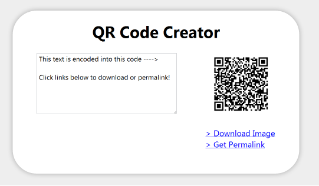

What is a QR Code?A QR Code is a system for storing data on a dot matrix or a bi-dimensional bar code. It features three squares located on the corners that allow the detection of the code position for the reader. What do we use a QR code for?Including software capable of reading QR codes in mobile phones has enabled new consumer-oriented uses that imply advantages like not having to enter data manually in phones. Addresses and URLs are becoming increasingly common in magazines and ads. And a new habit is to include QR codes in personal cards, so as to greatly simplify the task of entering personal details on a new customer into a mobile’s contact list. QR codes may also be read by PCs, smart phones and tablets by means of image capturing devices such as scanners or cameras, as well as by programs capable of reading QR data with an Internet connection for web addresses. How can we obtain these codes with the URL generated by GeneXus?Developer MenuA QR code is generated automatically for our applications since GeneXus Evolution 2; take a look at Executing From QR Codes. Service to be used with programmingGeneXus provides a service for obtaining a QR code (image) from a URL. For instance, if we wish to show our QR Code on a Web Panel object, we can program the following code: &linkURL='http://sdx.genexus.com/agetqrcode.aspx?'+&URL ...where: &linkURL is the link to the apk Note: If the linkURL is too big, then this method won't work. The QR Code won't be generated. Kaywa QRCodeKaywa QRCode is one of the many tools available on the web for generating QRCode. For example: Kaywa QRCode Chrome QRCode CreatorFor those used to Chrome we have an application that is installed in the browser itself. To install: https://chrome.google.com/webstore/detail/aaephdgbinagkeepamlbkhkfbiaedabm?hl=es  Google URL ShortenerThis Google product allows a reduction of our URLs to make their handling easier or to solve space issues. The surprising feature in it is that it also allows for the generation of a QRCode by simply adding “.qr” at the end of the shortened URL. Example: http://goo.gl/gfjgS.qr Note: This will only work on iOS. |
| Backlinks | |
| Executing From QR Codes | Execution for Android Using the Device |
| iOS Applications Wireless Prototyping |